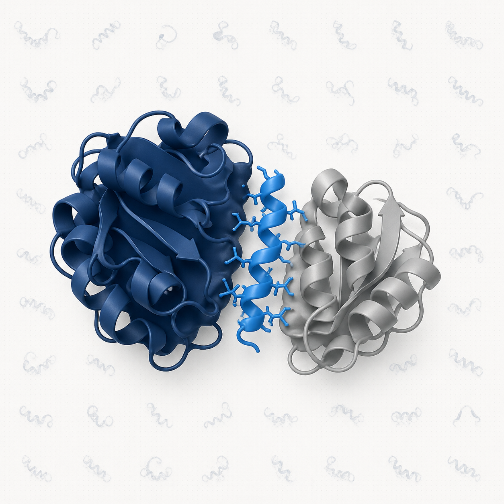

Theme 01 · Therapeutic intervention
Targeting Protein–Protein Interactions
Protein–protein interactions (PPIs) underlie most cellular processes and represent a vast, largely untapped target space for therapeutic intervention. Yet, traditional drug discovery often misses PPIs because their interfaces are flat and lack well-defined pockets.
Our approach. We develop potent peptide and protein binders against disease-relevant PPIs through library screening, then validate them in cell-based assays to identify modulators of pathogenic interactions. The lead candidates serve as starting points for therapeutic peptides, biologics, and chemical biology probes.
library screening
PPI inhibitors
therapeutic peptides
cell-based assays
protein engineering